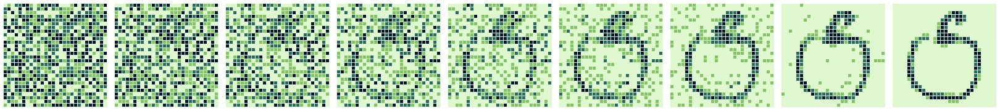
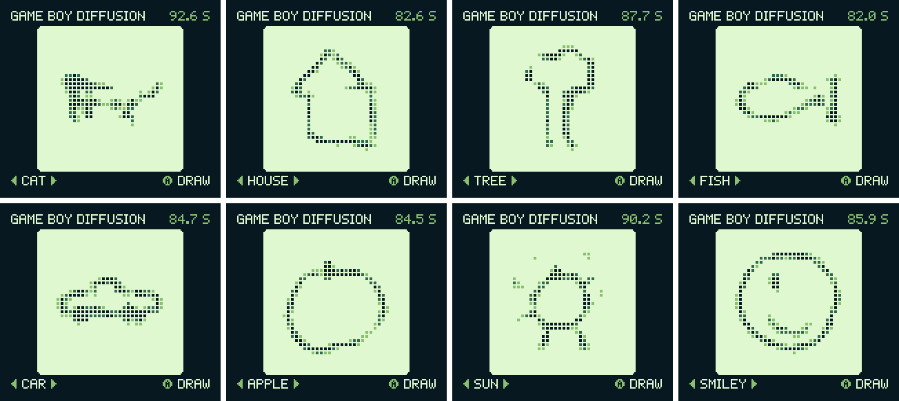

Real hardware, real neural network
Game Boy Diffusion
A diffusion model running on a Game Boy Color. Press A and the handheld's own CPU draws a doodle from random noise, with no PC or streaming involved.
1.08Mparameters
16DDIM steps
8.8Mmultiply-adds per image
~85 sper drawing
From noise to a drawing
A small MLP (784 → 512 → 512 → 784) predicts the clean image at each step, and a DDIM update removes part of the noise. These are steps 0, 2, 4 and so on up to 16, from the integer reference that matches the ROM.

Trained on 880,000 human doodles
The training data is Google's Quick, Draw! dataset (CC BY 4.0): 8 classes with 110k drawings each, at 28x28. None of the drawings are on the cartridge. The ROM holds the learned weights, so every drawing is computed from new noise.
Making it fit
- int8 weights, 4-bit activations and 16-bit sums, with quantization-aware training that does the ROM's exact integer math.
- The CPU has no multiply instruction, so a 24 KB product table in WRAM turns every multiply-add into two lookups and a 16-bit add: 18 machine cycles.
- The 2 MB ROM is almost entirely weights, and it needs a Game Boy Color for double speed mode and the extra WRAM banks.
- An emulator test compares the ROM with the Python reference after every step, for all 8 categories, and they match bit for bit.
All eight categories
